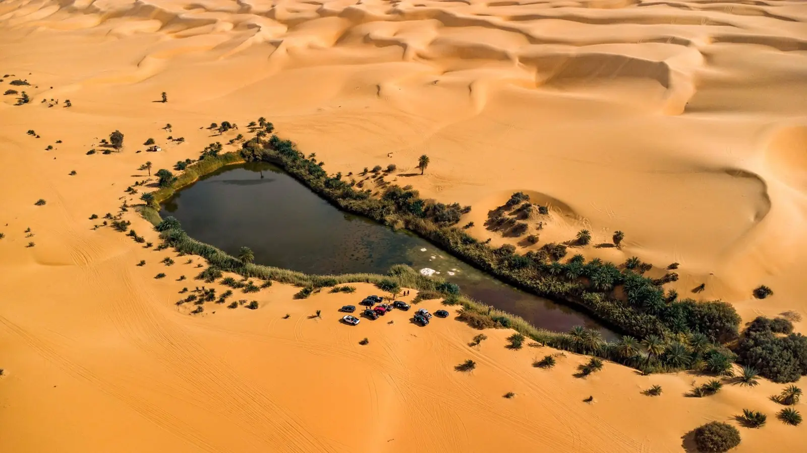
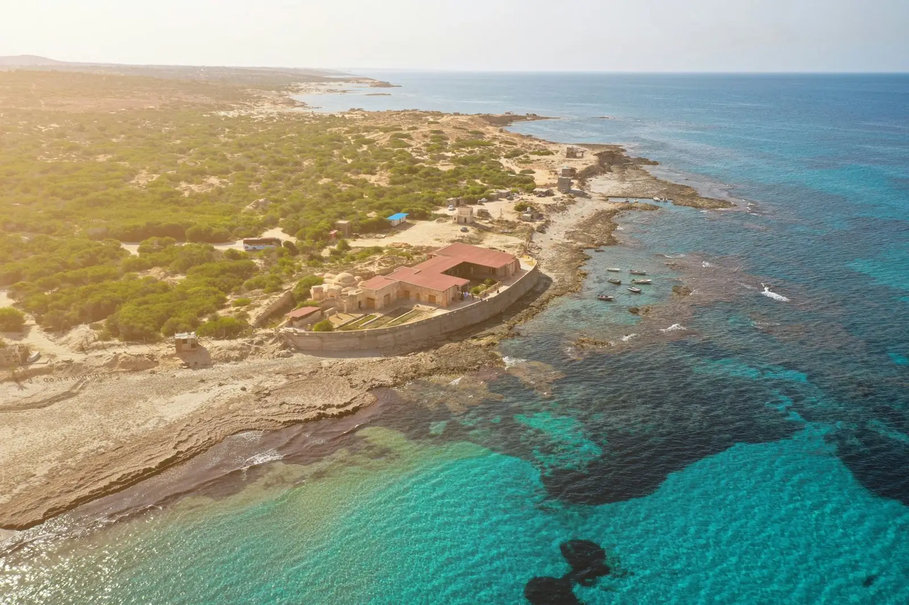
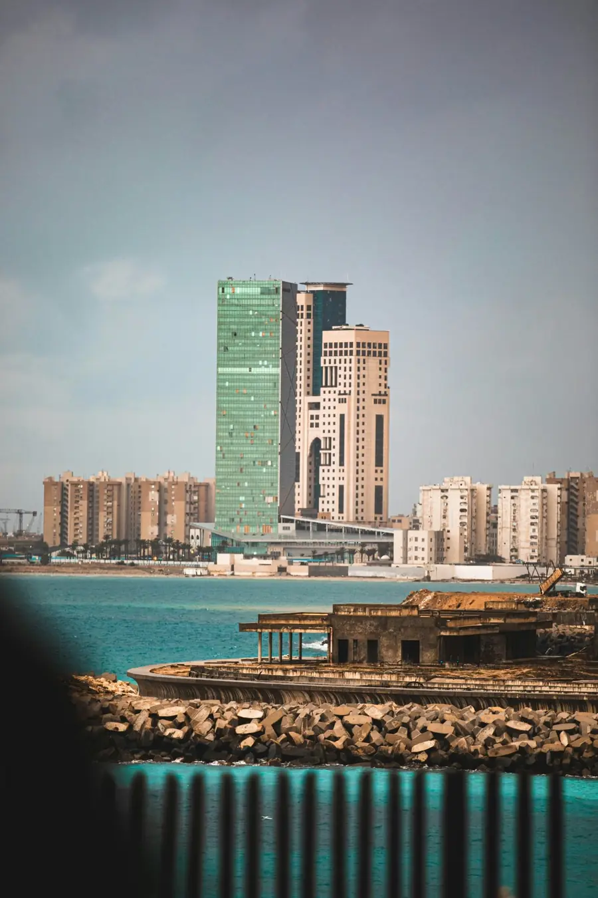
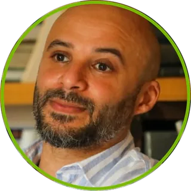
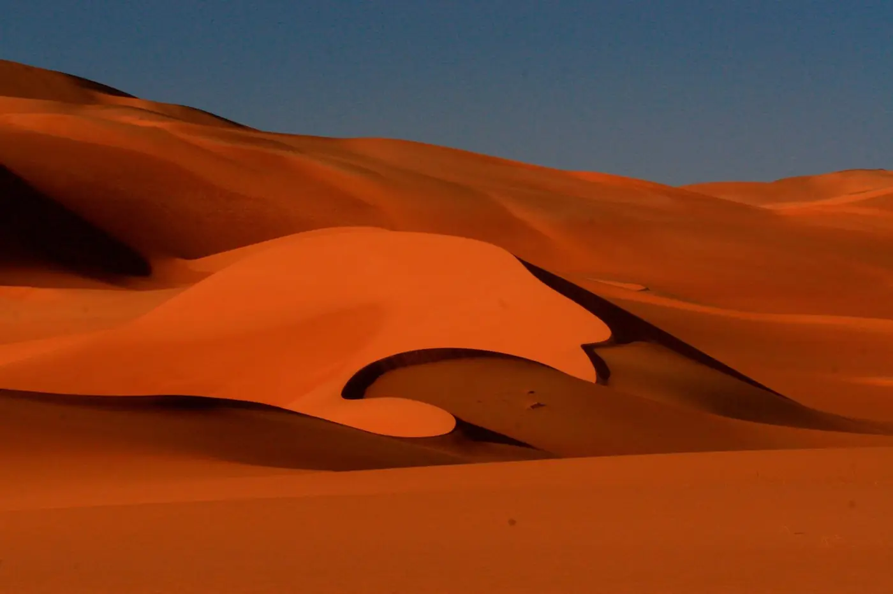
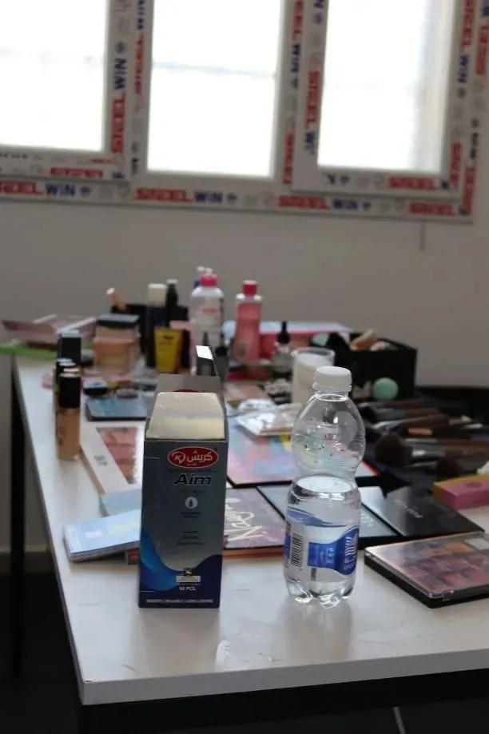
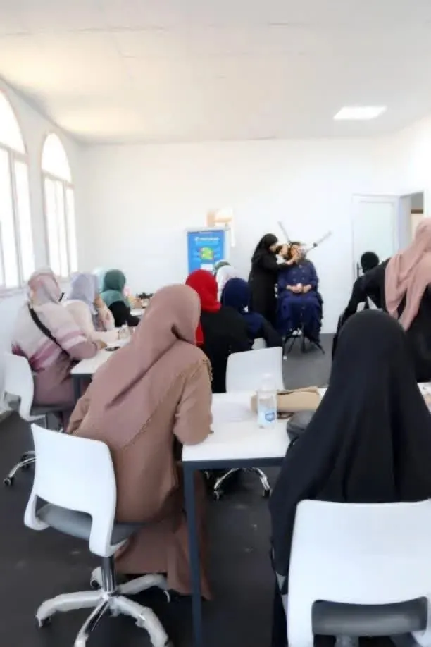
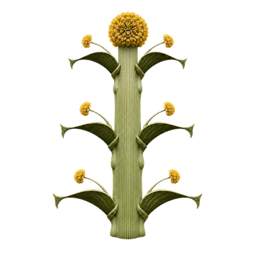
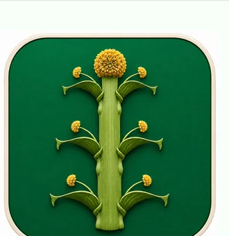
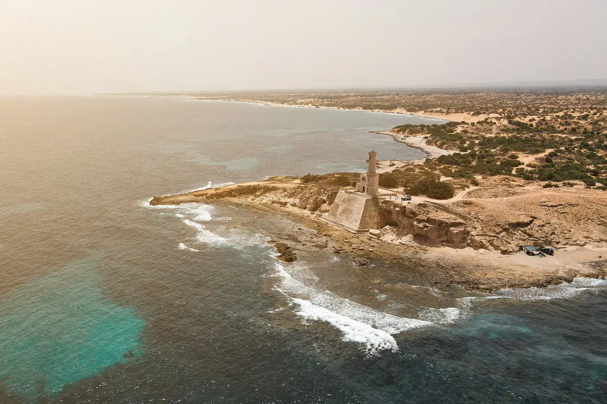

Start with evidenceنبدأ بالدليلWe read the context, confirm the need with data, and understand stakeholders and risks.نقرأ السياق، ونتحقق من الحاجة بالبيانات، ونفهم أصحاب المصلحة والمخاطر.
PROSPIRE FOUNDATION · LIBYAمؤسسة بروسباير · ليبيا
From potential
to measurable impact.من الإمكانات
إلى أثر قابل للقياس.
A Libyan civil society foundation that designs, delivers and measures development programmes — connecting the needs of Libyan communities and institutions with international standards of delivery and accountability.مؤسسة مجتمع مدني ليبية تصمم البرامج التنموية وتنفذها وتقيس أثرها، وتربط احتياجات المجتمعات والمؤسسات الليبية بمعايير الجهات الدولية في التنفيذ والمساءلة.
Mahira Woman · Beati · Mashrou'i 5×5امرأة ماهرة · بيئتي · مشروعي 5×5
HOW WE OPERATEكيف نعمل
Build capability while deliveringنبني القدرة أثناء التنفيذDisciplined delivery that transfers knowledge and builds local capability along the way.تنفيذ منضبط ينقل المعرفة ويبني القدرات المحلية أثناء العمل.
Learn with accountabilityنتعلم بمساءلةWe document what worked and what did not, and improve before any scale-up.نوثق ما نجح وما لم ينجح، ونحسّن قبل أي توسع.
01 · WHO WE ARE01 · من نحن
A new institution. Decades of experience.مؤسسة جديدة… وخبرة تمتد عقودًا.
Founded by senior professionals in international programme leadership, governance, economics, law, education and technology. We do not start with an idea in search of funding; we start with a need the data confirms, then design the response.أسستها نخبة من المتخصصين في قيادة البرامج الدولية والحوكمة والاقتصاد والقانون والتعليم والتقنية. لا نبدأ بفكرة نبحث لها عن تمويل؛ نبدأ بحاجة تثبتها البيانات، ثم نصمم الاستجابة.
Stronger communities, more effective institutions, and more sustainable and resilient cities.مجتمعات أكثر قدرة، ومؤسسات أكثر فاعلية، ومدن أكثر استدامة ومرونة.
About Prospireعن بروسبايرTo turn ideas into practical, measurable and sustainable results through knowledge, experience, capacity building and responsible partnerships.تحويل الأفكار إلى نتائج عملية قابلة للقياس ومستدامة، عبر المعرفة والخبرة وبناء القدرات والشراكات المسؤولة.
VALUESالقيم
- Integrityالنزاهة
- Inclusionالشمول
- Accountabilityالمساءلة
- Quality & learningالجودة والتعلم
- Sustainabilityالاستدامة
02 · OUR TEAM IN NUMBERS02 · الفريق بالأرقام
Leadership behind national milestones.قيادة صنعت محطات وطنية.
Experience in official projects, civil society and international programmes.خبرات في المشاريع الرسمية والعمل المدني والبرامج الدولية.
+40
years of senior leadership in oil & gas, major projects and electoral operationsعامًا من القيادة العليا في النفط والغاز والمشروعات الكبرى والعمليات الانتخابية
135
municipal electoral processes planned and delivered under team leadershipعملية انتخابية بلدية خُطط لها ونُفذت تحت قيادة أعضاء من الفريق
60
municipal councils in a direct working network across West, East and Southمجلسًا بلديًا في شبكة عمل مباشرة تغطي الغرب والشرق والجنوب
+25
years in economic research, policy and sustainable developmentعامًا في البحث الاقتصادي والسياسات والتنمية المستدامة
+8
international bodies the team has worked with: UNDP · IFES · GIZ · Cowater · Chemonics · USAID · UN missionsجهات دولية عمل معها الفريق: UNDP · IFES · GIZ · Cowater · Chemonics · USAID · بعثات الأمم المتحدة
15
members across governance and delivery: economics, law, programmes, education, technology, partnershipsعضوًا في الحوكمة والتنفيذ: اقتصاد، قانون، برامج، تعليم، تقنية، شراكات
Figures reflect the documented professional experience of team members; they are not Prospire’s own institutional track record. Prospire’s registration file has been submitted to the Civil Society Commission (in process).الأرقام تعكس الخبرات المهنية الموثقة لأعضاء الفريق، ولا تمثل سجلًا تنفيذيًا مؤسسيًا لبروسباير. ملف تسجيل المؤسسة مقدَّم إلى مفوضية المجتمع المدني (قيد الإجراء).
03 · WHAT WE DO03 · ماذا نقدم
From evidence to actionable support.من الدليل إلى دعم قابل للتطبيق.
Programme & project delivery · Advisory & institutional development · Training & capacity building · Community development · Research, MEL & impact · Environment & sustainability · Digital solutionsتنفيذ البرامج والمشروعات · الاستشارات والتطوير المؤسسي · التدريب وبناء القدرات · التنمية المجتمعية · البحوث والمتابعة والتقييم · الاستدامة والبيئة · الحلول الرقمية
01 02 03 04
Programme & project designتصميم البرامج والمشروعات
Needs assessment, intervention logic, workplans, delivery architecture and results frameworks.تقييم الاحتياجات، ومنطق التدخل، وخطط العمل، وهندسة التنفيذ وأطر النتائج.
Capacity building & learningبناء القدرات والتعلم
Practical, needs-based learning with assessment, application follow-up and institutional transfer.تعلم تطبيقي مبني على الاحتياج مع القياس ومتابعة التطبيق ونقل المعرفة للمؤسسات.
Research, national data & advisoryالبحوث والبيانات الوطنية والاستشارات
Research, national-data compilation and analysis, baselines, dashboards, evidence briefs and advisory support for planning and decisions.البحوث وتجميع وتنظيم وتحليل البيانات الوطنية، وخطوط الأساس، ولوحات البيانات، والمذكرات التحليلية، والاستشارات لدعم التخطيط وصنع القرار.
Local development, environment & resilienceالتنمية المحلية والبيئة والمرونة
Participatory local solutions, municipal support, environmental programmes and sustainable-city initiatives.حلول محلية تشاركية، ودعم البلديات، والبرامج البيئية ومبادرات المدن المستدامة.
04 · WHY WE LAUNCHED OUR INITIATIVES04 · لماذا أطلقنا مبادراتنا؟
The need, as the data shows it.الحاجة كما تثبتها البيانات.
We start with a need confirmed by data and studies, then design the response and measure its impact. These are the challenges that led us to launch our three initiatives.نبدأ بحاجة تثبتها البيانات والدراسات، ثم نصمم الاستجابة ونقيس أثرها. هذه هي التحديات التي دفعتنا إلى إطلاق مبادراتنا الثلاث.
05 · INITIATIVES05 · المبادرات
Three initiatives. One way of working.ثلاث مبادرات. ومنهج عمل واحد.
Each initiative answers a need the data confirms, and each reports where it stands — technically and administratively.كل مبادرة تستجيب لحاجة تثبتها البيانات، وتوضح أين وصلت فنيًا وإداريًا.

Test release: November 2026الإطلاق التجريبي: نوفمبر 2026
Beatiبيئتي
Learn, plant and make an impactتعلّم، ازرع، واصنع أثرًا
Phase 1 deliveredنُفذت المرحلة الأولى
Mahira Womanامرأة ماهرة
Skills into opportunityمن المهارة إلى الفرصة
A GROWTH programme · first cohort in preparationبرنامج مبادرة GROWTH · الدورة الأولى قيد الإعداد
Mashrou'i 5×5مشروعي 5×5
From idea to sustainabilityمن الفكرة إلى الاستدامة
06 · NATIONAL REACH06 · الامتداد الوطني
Relationships across Libya, built in real places.علاقات عبر ليبيا، مبنية في أماكن حقيقية.
A direct working network with municipal councils across West, East and South, within a national architecture of 143 municipalities.شبكة عمل مباشرة مع مجالس بلدية في الغرب والشرق والجنوب، ضمن بنية وطنية من 143 بلدية.
Boundary geometry: Natural Earth / world.geo · city points use geographic coordinates.هندسة الحدود: Natural Earth / world.geo · مواقع المدن مبنية على الإحداثيات الجغرافية.
60municipal councils in a direct working network across West, East and Southمجلسًا بلديًا في شبكة عمل مباشرة تغطي الغرب والشرق والجنوب 143 describes our national coverage architecture, not a count of active partners.الرقم 143 يمثل بنية التغطية الوطنية، وليس عدد الشركاء النشطين.
Interactive mapخريطة تفاعلية
Explore national networkاستكشف الامتداد الوطني Select a locationاختر موقعًا
Each point opens a sourced municipal brief.تفتح كل نقطة ملفًا بلديًا موثق المصادر.
07 · HOW WE WORK07 · كيف نعمل
Six steps. From need to impact.ست خطوات. من الحاجة إلى الأثر.
We apply the same method in every initiative, so results can be tracked, compared and improved.نطبق المنهج نفسه في كل مبادرة، حتى تكون النتائج قابلة للتتبع والمقارنة والتحسين.
01 02 03 04 05 06
Diagnoseالتشخيص
We read the context, confirm the need with data, and understand stakeholders and risks.نقرأ السياق، ونتحقق من الحاجة بالبيانات، ونفهم أصحاب المصلحة والمخاطر.
Designالتصميم
We co-design the response with communities and partners, with clear results and indicators.نصمم التدخل مع المجتمع والشركاء، بنتائج ومؤشرات واضحة.
Partnerالشراكة
We agree roles and responsibilities and carry out partner due diligence.نحدد الأدوار والمسؤوليات، ونجري العناية الواجبة للشركاء.
Deliverالتنفيذ
Disciplined delivery that transfers knowledge and builds local capability along the way.تنفيذ منضبط ينقل المعرفة ويبني القدرات المحلية أثناء العمل.
Measureالقياس
Pre/post assessment and follow-up on how participants apply what they learned.قياس قبلي وبعدي، ومتابعة تطبيق ما تعلّمه المشاركون بعد البرنامج.
Learnالتعلّم
We document what worked and what did not, and improve before any scale-up.نوثق ما نجح وما لم ينجح، ونحسّن قبل أي توسع.

08 · PARTNERSHIP08 · الشراكة
We are looking for partners in success.نبحث عن شركاء نجاح.
Partnership starts with a shared problem — not a logo wall.الشراكة تبدأ بمشكلة مشتركة… لا بقائمة شعارات.
Let’s design the next programme together.لنصمم البرنامج القادم معًا.
DonorsالمانحونDesign, delivery, co-fundingتصميم وتنفيذ وتمويل مشترك
MunicipalitiesالبلدياتLocal delivery, capabilityتنفيذ محلي وبناء قدرات
Private sectorالقطاع الخاصSponsorship with resultsرعاية بنتائج قابلة للقياس
UniversitiesالجامعاتResearch, data, knowledgeالبحث والبيانات والمعرفة
A new institution. Decades of experience.مؤسسة جديدة… وخبرة تمتد عقودًا.
Prospire is a Libyan civil society foundation based in Tripoli, founded by senior professionals in international programme leadership, governance, economics, law, education and technology. We design, deliver and measure development programmes, connecting the needs of Libyan communities and institutions with international standards of delivery and accountability.بروسباير مؤسسة مجتمع مدني ليبية مقرها طرابلس، أسستها نخبة من المتخصصين في قيادة البرامج الدولية والحوكمة والاقتصاد والقانون والتعليم والتقنية. نصمم البرامج التنموية وننفذها ونقيس أثرها، ونربط احتياجات المجتمعات والمؤسسات الليبية بمعايير الجهات الدولية في التنفيذ والمساءلة.

TRIPOLI · LIBYAطرابلس · ليبيا
We do not start with an idea in search of funding; we start with a need the data confirms, then design the response.لا نبدأ بفكرة نبحث لها عن تمويل؛ نبدأ بحاجة تثبتها البيانات، ثم نصمم الاستجابة.
Seven areas of workسبعة مجالات عمل
01Programme & project deliveryتنفيذ البرامج والمشروعات
02Advisory & institutional developmentالاستشارات والتطوير المؤسسي
03Training & capacity buildingالتدريب وبناء القدرات
04Community developmentالتنمية المجتمعية
05Research, MEL & impactالبحوث والمتابعة والتقييم
06Environment & sustainabilityالاستدامة والبيئة
07Digital solutionsالحلول الرقمية
01 · IDENTITY01 · الهوية
Vision, mission and values.الرؤية والرسالة والقيم.
VISIONالرؤية
Stronger communities, more effective institutions, and more sustainable and resilient cities.مجتمعات أكثر قدرة، ومؤسسات أكثر فاعلية، ومدن أكثر استدامة ومرونة.
MISSIONالرسالة
To turn ideas into practical, measurable and sustainable results through knowledge, experience, capacity building and responsible partnerships.تحويل الأفكار إلى نتائج عملية قابلة للقياس ومستدامة، عبر المعرفة والخبرة وبناء القدرات والشراكات المسؤولة.
VALUESالقيم
Integrity · Inclusion · Accountability · Quality & Learning · Sustainabilityالنزاهة · الشمول · المساءلة · الجودة والتعلم · الاستدامة
02 · GOVERNANCE02 · الحوكمة
Governance ready from day one.حوكمة جاهزة من اليوم الأول.
General Assembly, Board and Executive Management · internal executive bylaw · 16 institutional policies including safeguarding & PSEA, integrity & anti-fraud, partner due diligence, procurement and data protection · Strategic Plan 2027–2030جمعية عمومية ومجلس إدارة وإدارة تنفيذية · لائحة تنفيذية داخلية · 16 سياسة مؤسسية منها الحماية ومنع الاستغلال، والنزاهة ومكافحة الاحتيال، والعناية الواجبة للشركاء، والمشتريات، وحماية البيانات · خطة استراتيجية 2027–2030
01General Assemblyالجمعية العمومية
02Board of Directorsمجلس الإدارة
03Executive Managementالإدارة التنفيذية
0416 institutional policies16 سياسة مؤسسية
03 · OUR TEAM IN NUMBERS03 · الفريق بالأرقام
A complete team — from partnerships to technology.فريق متكامل… من الشراكات إلى التقنية.
+40
years of senior leadership in oil & gas, major projects and electoral operationsعامًا من القيادة العليا في النفط والغاز والمشروعات الكبرى والعمليات الانتخابية
135
municipal electoral processes planned and delivered under team leadershipعملية انتخابية بلدية خُطط لها ونُفذت تحت قيادة أعضاء من الفريق
60
municipal councils in a direct working network across West, East and Southمجلسًا بلديًا في شبكة عمل مباشرة تغطي الغرب والشرق والجنوب
+25
years in economic research, policy and sustainable developmentعامًا في البحث الاقتصادي والسياسات والتنمية المستدامة
+8
international bodies the team has worked with: UNDP · IFES · GIZ · Cowater · Chemonics · USAID · UN missionsجهات دولية عمل معها الفريق: UNDP · IFES · GIZ · Cowater · Chemonics · USAID · بعثات الأمم المتحدة
15
members across governance and delivery: economics, law, programmes, education, technology, partnershipsعضوًا في الحوكمة والتنفيذ: اقتصاد، قانون، برامج، تعليم، تقنية، شراكات
Figures reflect the documented professional experience of team members; they are not Prospire’s own institutional track record. Prospire’s registration file has been submitted to the Civil Society Commission (in process).الأرقام تعكس الخبرات المهنية الموثقة لأعضاء الفريق، ولا تمثل سجلًا تنفيذيًا مؤسسيًا لبروسباير. ملف تسجيل المؤسسة مقدَّم إلى مفوضية المجتمع المدني (قيد الإجراء).
Leadership behind national milestones.قيادة صنعت محطات وطنية.
Experience in official projects, civil society and international programmes. Select any profile for the full background.خبرات في المشاريع الرسمية والعمل المدني والبرامج الدولية. اضغط على أي ملف للاطلاع على الخلفية كاملة.
01 · GOVERNANCE & LEADERSHIP01 · الحوكمة والقيادة
General Assembly and Board.الجمعية العمومية ومجلس الإدارة.
Prof. Dr. Hamida Milad Aburoniyaأ.د. حميدة ميلاد أبورونية
President of the General Assemblyرئيسة الجمعية العموميةProfessor of Economics, Libyan Academy for Postgraduate Studies; PhD, University of Salford (UK)أستاذة الاقتصاد بالأكاديمية الليبية للدراسات العليا، ودكتوراه من جامعة سالفورد (بريطانيا)
Souf Mohamed Aburoniyaسوف محمد أبورونية
Founder & Chairperson of the Boardالمؤسس ورئيس مجلس الإدارةHas led numerous national and international projects and programmes, with 10+ years in donor-funded delivery and field coordinationقاد العديد من المشاريع والبرامج الوطنية والدولية، بخبرة تتجاوز 10 سنوات في المشروعات الممولة دوليًا والتنسيق الميداني
Eng. Salem Mohamed Al-Sharif Bentahiaم. سالم محمد الشريف بن تاهية
Vice Chairperson of the Boardنائب رئيس مجلس الإدارةFormer Chair, Central Committee for Municipal Council Elections (about 135 electoral processes)رئيس سابق للجنة المركزية لانتخابات المجالس البلدية — نحو 135 عملية انتخابية
Abdulhafidh Saad Ahmedعبد الحفيظ سعد أحمد
Legal Advisor & General Assembly Rapporteurالمستشار القانوني ومقرر الجمعية العموميةHead of the legal team and objections committee, Central Committee for Municipal Council Electionsرئيس الفريق القانوني ولجنة الطعون باللجنة المركزية لانتخابات المجالس البلدية
Maureen Tuweniمورين الطويني
Executive Directorالمدير التنفيذي
Education-management leader and curriculum-development expert.قيادية في الإدارة التعليمية وخبيرة في تطوير المناهج.Jinan Issa Rawabجنان عيسى رواب
International Strategic Communication Officerمسؤولة التواصل الاستراتيجي الدولي
UN experience in Libya and abroad.خبرة أممية داخل ليبيا وخارجها.Natali Karayanناتالي كارايان
International Advisor — Governance & Electionsمستشارة دولية للحوكمة والبرامج الانتخابية
Electoral Officer, UNDP Libya Local Elections Project, Tripoliمسؤولة انتخابات في مشروع الانتخابات المحلية — UNDP ليبيا، طرابلسMohamed Ahmed Alkhazimiمحمد أحمد الخازمي
Board Member — Digital Transformationعضو مجلس الإدارة — التحول الرقمي
5+ years in systems and network administration and Microsoft 365خبرة تتجاوز 5 سنوات في إدارة الأنظمة والشبكات وMicrosoft 36502 · EXECUTIVE TEAM02 · الفريق التنفيذي
A complete delivery team — from partnerships to technology.فريق تنفيذ متكامل… من الشراكات إلى التقنية.
Fady Nagib Elmarzugiفادي نجيب المرزوقي
Treasurerأمين الصندوق
CCNA-certified; studying information technologyحاصل على شهادة CCNA ويدرس تقنية المعلوماتGhayda Shanburغيداء شنبور
Strategic Planning Officerمسؤولة التخطيط الاستراتيجي
International relations specialist (Eastern Mediterranean University; Al Akhawayn University, Morocco)متخصصة في العلاقات الدولية (جامعة شرق المتوسط، وجامعة الأخوين بالمغرب)Eng. Mohamed Salem Bentahiaم. محمد سالم بن تاهية
Project Managementإدارة المشاريع
13+ years in operations and projects.أكثر من 13 عامًا في العمليات والمشاريع.Esraa Tarbaghiaإسراء طرباقية
Technical Solutions & Services Leadقائدة الحلول والخدمات التقنية
Odoo 19 certified and ISO/IEC 27001 Lead Auditor.معتمدة في Odoo 19 وISO/IEC 27001 Lead Auditor.
Mustafa Darbiمصطفى دربي
Business Developmentتطوير الأعمال
Electoral operations, advertising and design, and oil-field operations.العمليات الانتخابية، والإعلان والتصميم، والعمليات الميدانية النفطية.Mohamed Aljundiمحمد الجندي
Training Delivery, Programmes & Operations Leadقائد تسليم التدريب والبرامج التدريبية والعمليات
Leads delivery of training programmes from planning and scheduling to implementationيقود تسليم البرامج التدريبية من التخطيط والجدولة حتى التنفيذAyman Alhinshiriأيمن الهنشيري
Design & Visual Identityالتصميم والهوية البصرية
9+ years building visual identities and advertising campaigns for digital and print.أكثر من 9 سنوات في بناء الهويات البصرية والحملات الإعلانية للمنصات الرقمية والمطبوعة.Display order does not imply rank or reporting lines. Experience listed is the individual professional experience of team members and does not imply current formal partnerships between Prospire and the bodies named.ترتيب العرض لا يعني أولوية ولا تبعية. الخبرات المذكورة خبرات مهنية لأعضاء الفريق بصفتهم الفردية، ولا تعني شراكات رسمية حالية لبروسباير مع الجهات المذكورة.
The need, as the data shows it.الحاجة كما تثبتها البيانات.
Prospire does not start with an idea in search of funding. We start with a need confirmed by data and studies, then design the response and measure its impact. These are the challenges that led us to launch our three initiatives.لا تبدأ بروسباير بفكرة تبحث لها عن تمويل؛ نبدأ بحاجة تثبتها البيانات والدراسات، ثم نصمم الاستجابة ونقيس أثرها. هذه هي التحديات التي دفعتنا إلى إطلاق مبادراتنا الثلاث.
01 · ENVIRONMENT → BEATI01 · البيئة ← بيئتي
The environmental challenge: land under pressure, data missing.التحدي البيئي: أرض تتصحر ومعلومة غائبة.
So we launched Beati: to organise scattered environmental effort, expand green cover with real follow-up, and build the first verified municipal-level environmental data layer.لذلك أطلقنا «بيئتي»: لتنظيم الجهد البيئي المتفرق، وتوسيع الرقعة الخضراء بمتابعة حقيقية، وبناء أول طبقة بيانات بيئية موثقة على مستوى البلدية.

MURZUQ · DESERTIFICATION CONTEXTمرزق · سياق التصحر
More than 95% of Libya is desert or semi-desert.أكثر من 95% من أراضي ليبيا صحراوية أو شبه صحراوية.
UNDP, 2024
0.1%forest area as a share of landفقط مساحة الغابات من اليابسةFAO / World Bank, 2023
+90%of water supply from non-renewable groundwaterمن إمدادات المياه من مياه جوفية غير متجددةUNDP — National Water Security Strategy 2050
88%of people live in cities — pressure on green spaceمن السكان في المدن — ضغط على المساحات الخضراءWorld Bank / UN, 2025
93%bare land in Greater Tripoli in 2025أراضٍ جرداء في نطاق طرابلس الكبرى عام 2025Libyan Journal of Ecological & Environmental Sciences and Technology, 2025
−51%fall in vegetation in a north-east Al-Jabal Al-Akhdar study area (2011–2021)تراجع الغطاء النباتي في منطقة دراسة شمال شرق الجبل الأخضر (2011–2021)Libyan Journal of Basic Sciences, 2022
0published official environmental indicators at municipal level — the lowest level available is the regionمؤشرات بيئية رسمية منشورة على مستوى البلدية — أدنى مستوى متاح هو الإقليمProspire review of available official data, 2026
Greater Tripoli: bare land dominates land coverطرابلس الكبرى: الأراضي الجرداء تهيمن على الغطاء الأرضي
Share of bare land in land cover, 2016–2025 (axis starts at 88%)نسبة الأراضي الجرداء من الغطاء الأرضي، 2016–2025 (المحور يبدأ من 88%)Source: Libyan Journal of Ecological & Environmental Sciences and Technology, 2025 — a local indicator for Greater Tripoli, not a national share.المصدر: المجلة الليبية للعلوم البيئية والتكنولوجيا، 2025 — مؤشر محلي لنطاق طرابلس الكبرى وليس نسبة وطنية.
North-east Al-Jabal Al-Akhdar: vegetation halved in a decadeشمال شرق الجبل الأخضر: الغطاء النباتي انخفض إلى النصف خلال عقد
Area of each class in km² — light = 2011, dark = 2021مساحة كل فئة بالكيلومتر المربع — اللون الفاتح 2011، الداكن 2021Vegetationالغطاء النباتي−50.87 km²
201199.66 km²
202148.79 km²
Built-upالعمران+16.90 km²
201134.19 km²
202151.09 km²
Bare landالأراضي الجرداء+30.63 km²
201168.1 km²
202198.73 km²
Source: Libyan Journal of Basic Sciences, 2022 — study area only.المصدر: المجلة الليبية للعلوم الأساسية، 2022 — منطقة الدراسة فقط.
02 · WOMEN → MAHIRA WOMAN02 · المرأة ← امرأة ماهرة
The economic-opportunity gap for women.فجوة الفرص الاقتصادية للمرأة.
So we launched Mahira Woman: practical vocational training at a 90% reduced cost, inside municipal women's centres, opening a realistic path to income beyond public employment.لذلك أطلقنا «امرأة ماهرة»: تدريب مهني تطبيقي بتكلفة مخفّضة 90%، داخل مراكز المرأة في البلدية، يفتح طريقًا واقعيًا نحو الدخل خارج الوظيفة العامة.
95%of employed women in Libya work in the public sectorمن النساء العاملات في ليبيا يعملن في القطاع العامIMF Article IV, 2025
86%of the official labour force is in public employmentمن القوى العاملة الرسمية تعمل في القطاع العامIMF Article IV, 2025
3main barriers to training: cost, distance, and theory without practiceعوائق رئيسية أمام التدريب: التكلفة، والمسافة، والتدريب النظري بلا ممارسةProspire — Mahira Woman programme design, 2026
Mahira Woman: delivered locally, expanding municipality by municipalityامرأة ماهرة: تنفيذ محلي ثم توسع بلدي
Tajoura + Abu Salimتاجوراء + أبوسليم
- July–August 2026يوليو–أغسطس 2026
- Inside municipal women’s training centresداخل مراكز تدريب المرأة البلدية
- Professional beauty & makeup — live demo and supervised practiceالتجميل والمكياج الاحترافي — عرض مباشر وممارسة تحت الإشراف
- 90% fee reductionتخفيض الرسوم 90%
Janzour + Tripoli Centreجنزور + طرابلس المركز
- Same model: access, practice, local deliveryالنموذج نفسه: إتاحة، ممارسة، تنفيذ محلي
- Measure completion and practical assessmentقياس الإتمام والتقييم العملي
- Follow how the skill is used after trainingمتابعة استخدام المهارة بعد التدريب
03 · TRAINING → MASHROU'I 5×503 · التدريب ← مشروعي 5×5
The training-quality and labour-market gap.فجوة جودة التدريب وسوق العمل.
So we designed Mashrou'i 5×5: a five-stage methodology that ends with practical tools, measurement and follow-up, instead of short, scattered courses.لذلك صممنا «مشروعي 5×5»: منهجية من خمس مراحل تنتهي بأدوات عملية وقياس ومتابعة، بدل الدورات القصيرة المتفرقة.
50%youth unemployment (ages 15–24)بطالة الشباب (15–24 سنة)World Bank / ILO, 2025
30.5%of youth are not in employment, education or trainingمن الشباب خارج العمل والتعليم والتدريبILO modelled estimates, 2025
2026the ILO launched a rapid assessment of Libya's employment and skills ecosystem to identify skills mismatchesأطلقت منظمة العمل الدولية تقييمًا سريعًا لمنظومة التشغيل والمهارات في ليبيا لتحديد فجوات المهاراتILO, 2026 — via Prospire Libya Training Market Study 2026
143municipalities in Libya — a national network through which training can reach people locallyبلدية في ليبيا — شبكة وطنية يمكن أن تصل عبرها البرامج التدريبية محليًاMinistry of Local Government
The need: economic opportunity for women beyond public jobs is limitedالحاجة: الفرص الاقتصادية للمرأة خارج الوظيفة العامة محدودة
Labour-market signals behind Mahira Woman and Mashrou'i 5×5مؤشرات سوق العمل التي تبني عليها امرأة ماهرة ومشروعي 5×595%
of employed women work in the public sectorمن النساء العاملات يعملن في القطاع العام
IMF Article IV · 202586%
of the official labour force is in public employmentمن القوى العاملة الرسمية في القطاع العام
IMF Article IV · 202550%
youth unemployment (ages 15–24)بطالة الشباب (15–24 سنة)
World Bank / ILO · 202530.5%
of youth are not in employment, education or trainingمن الشباب خارج العمل والتعليم والتدريب
ILO · 2025Three initiatives. Each answers a need the data confirms.ثلاث مبادرات. كل منها تستجيب لحاجة تثبتها البيانات.
Select an initiative for the need, our response, where we are, next steps and how to support it.اختر مبادرة للاطلاع على الحاجة، والاستجابة، وأين وصلنا، والخطوات التالية، وطرق الدعم.
Test release: November 2026الإطلاق التجريبي: نوفمبر 2026
Beatiبيئتي
A national environmental initiative combining sourced environmental information, simple field action by families and transparent measurement of results.مبادرة بيئية وطنية تجمع المعلومة البيئية الموثقة، والعمل الميداني البسيط للأسر، والقياس الشفاف للنتائج.
Phase 1 deliveredنُفذت المرحلة الأولى
Mahira Womanامرأة ماهرة
Women's skills and economic inclusion: practical vocational training within reach inside the municipality.تمكين مهاري وشمول اقتصادي للمرأة: تدريب مهني تطبيقي في متناولها داخل بلديتها.
A GROWTH programme · first cohort in preparationبرنامج مبادرة GROWTH · الدورة الأولى قيد الإعداد
Mashrou'i 5×5مشروعي 5×5
Helping women develop a business idea or strengthen an existing small enterprise.مساعدة المرأة على تطوير فكرة مشروع، أو تقوية مشروع صغير قائم.
OUR FIRST DELIVERED INITIATIVE · 2026أولى مبادراتنا المنفذة · 2026
Mahira Woman.
Skills into opportunity.امرأة ماهرة.
من المهارة إلى الفرصة.
Prospire's first delivered initiative: women's skills and economic inclusion that puts practical vocational training within reach inside the municipality and builds a realistic path to professional practice and self-employment.أولى مبادرات بروسباير المنفذة: تمكين مهاري وشمول اقتصادي للمرأة، يجعل التدريب المهني التطبيقي في متناولها داخل بلديتها، ويبني مسارًا واقعيًا نحو الممارسة المهنية والعمل الحر.
THE NEED WE STARTED FROMالحاجة التي انطلقنا منها
A model that removes all three barriers at once.نموذج يزيل العوائق الثلاثة معًا.
- 95% of employed women in Libya work in the public sector; opportunity outside it is limited (IMF, 2025).95% من النساء العاملات في ليبيا يعملن في القطاع العام، والفرص خارجه محدودة (صندوق النقد الدولي، 2025).
- The cost of quality vocational training is a real barrier for many women.تكلفة التدريب المهني الجيد عائق حقيقي أمام كثير من النساء.
- Distance to training centres adds a mobility barrier.بُعد مراكز التدريب يضيف عائق التنقل.
A model that removes all three barriers at once: a 90% fee reduction, training inside municipal women's centres, and learning by doing.نموذج يزيل العوائق الثلاثة معًا: تخفيض الرسوم 90%، والتدريب داخل مراكز المرأة البلدية، والتعلم بالممارسة.
Women’s Training & Development Officeمكتب تدريب وتطوير المرأةTajoura Municipalityبلدية تاجوراءPhase 1 · July–August 2026المرحلة الأولى · يوليو–أغسطس 2026
Women’s Training & Development Officeمكتب تدريب وتطوير المرأةAbu Salim Municipalityبلدية أبوسليمPhase 1 · July–August 2026المرحلة الأولى · يوليو–أغسطس 2026
THE MODELالنموذج
Access, practice, local delivery — progression to income.الإتاحة والممارسة والتنفيذ المحلي — والتدرّج نحو الدخل.
A 90% fee reductionتخفيض الرسوم 90%
Cost is removed as a barrier to quality vocational training.إزالة التكلفة كعائق أمام التدريب المهني الجيد.
Learning by doingالتعلم بالممارسة
Live demonstration and supervised practice.العرض المباشر والممارسة تحت الإشراف.
Inside municipal women's centresداخل مراكز المرأة البلدية
Training moved closer to participants, removing the mobility barrier.نقل التدريب إلى داخل البلدية لإزالة عائق التنقل.
A path to practice and self-employmentمسار نحو الممارسة والعمل الحر
Follow how participants use the skill after training.متابعة استخدام المهارة بعد التدريب.
WHERE WE AREأين وصلنا
Delivered locally, then expanded step by step.تنفيذ محلي ثم توسع على مراحل.
Phase 1 delivered July–August 2026: practical training in professional beauty and makeup for women of all ages, through live demonstration and supervised practice. Completion and post-training skill-use measurement: not yet published.نُفذت المرحلة الأولى في يوليو–أغسطس 2026: تدريب تطبيقي على التجميل والمكياج الاحترافي لسيدات من مختلف الأعمار، بالعرض المباشر والممارسة تحت الإشراف. قياس الإتمام واستخدام المهارة بعد التدريب: لم يُنشر بعد.
Delivered in cooperation with the Women's Training & Development Office – Tajoura Municipality and the Women's Training & Development Office – Abu Salim Municipality, inside their centres. Next phase in Janzour and Tripoli Centre in preparation.نُفذت بالتعاون مع مكتب تدريب وتطوير المرأة – بلدية تاجوراء، ومكتب تدريب وتطوير المرأة – بلدية أبوسليم، داخل مراكزهما. المرحلة التالية في جنزور وطرابلس المركز قيد التحضير.
Tajoura + Abu Salimتاجوراء + أبوسليم
- July–August 2026يوليو–أغسطس 2026
- Professional beauty and makeup, for women of all agesالتجميل والمكياج الاحترافي لسيدات من مختلف الأعمار
- Inside the municipal women's centresداخل مراكز المرأة البلدية
Janzour + Tripoli Centreجنزور + طرابلس المركز
- Expand to Janzour and Tripoli Centreالتوسع إلى جنزور وطرابلس المركز
- Measure completion and practical assessmentقياس الإتمام والتقييم العملي
- Follow post-training use of the skillمتابعة استخدام المهارة بعد التدريب

From diagnosis to learning — the same six-step method.من التشخيص إلى التعلّم — بالمنهج نفسه.
- Diagnoseتشخيصcost and distance barriersعائق التكلفة والمسافة
- Designتصميم90% subsidy and training inside the municipalityدعم 90% وتدريب داخل البلدية
- DeliverتنفيذTajoura and Abu Salimتاجوراء وأبوسليم
- Measureقياسcompletion and skill useالإتمام واستخدام المهارة
- Learnتعلّمexpansion to Janzour and Tripoli Centreالتوسع إلى جنزور وطرابلس المركز
Mahira Woman: delivered locally, expanding municipality by municipalityامرأة ماهرة: تنفيذ محلي ثم توسع بلدي
Tajoura + Abu Salimتاجوراء + أبوسليم
- July–August 2026يوليو–أغسطس 2026
- Inside municipal women’s training centresداخل مراكز تدريب المرأة البلدية
- Professional beauty & makeup — live demo and supervised practiceالتجميل والمكياج الاحترافي — عرض مباشر وممارسة تحت الإشراف
- 90% fee reductionتخفيض الرسوم 90%
Janzour + Tripoli Centreجنزور + طرابلس المركز
- Same model: access, practice, local deliveryالنموذج نفسه: إتاحة، ممارسة، تنفيذ محلي
- Measure completion and practical assessmentقياس الإتمام والتقييم العملي
- Follow how the skill is used after trainingمتابعة استخدام المهارة بعد التدريب

SUPPORT THE INITIATIVEادعم المبادرة
Help bring practical skills to women, municipality by municipality.ساهم في إتاحة المهارة للمرأة، بلدية بعد أخرى.
Funding · trainers · tools and training materials · private-sector sponsorshipتمويل · مدربون · أدوات ومواد تدريب · رعاية من القطاع الخاص
Test release: November 2026الإطلاق التجريبي: نوفمبر 2026
Beati.
Learn, plant and make an impact.بيئتي.
تعلّم، ازرع، واصنع أثرًا.
A national environmental initiative combining sourced environmental information, simple field action by families — planting, care, clean-ups and reporting — and transparent measurement of results. Its Android and iOS app connects citizens with their municipality and the competent official bodies.مبادرة بيئية وطنية تجمع المعلومة البيئية الموثقة، والعمل الميداني البسيط للأسر — زراعة ورعاية وتنظيف وإبلاغ — والقياس الشفاف للنتائج، ويربط تطبيقها على Android وiOS المواطن ببلديته والجهات الرسمية المختصة.

01 · THE NEED WE STARTED FROM01 · الحاجة التي انطلقنا منها
Land under pressure. Data missing.أرض تتصحر. ومعلومة غائبة.
Libya has no published official environmental indicators at municipal level; the lowest level available is the region. Beati therefore first builds a verified data layer for each municipality, with a source and reliability grade on every figure.لا توجد في ليبيا مؤشرات بيئية رسمية منشورة على مستوى البلدية؛ أدنى مستوى متاح هو الإقليم. لذلك تبني بيئتي أولًا طبقة بيانات موثقة لكل بلدية، مع درجة موثوقية ومصدر لكل رقم.
Why Beati? Environmental pressure in numbersلماذا بيئتي؟ الضغط البيئي في أرقام
National indicators from documented international sourcesمؤشرات وطنية من مصادر دولية موثقة+95%
of Libya is desert or semi-desertمن أراضي ليبيا صحراوية أو شبه صحراوية
UNDP · 20240.1%
forest area as a share of landفقط مساحة الغابات من اليابسة
FAO / World Bank · 2023+90%
of water supply from non-renewable groundwaterمن إمدادات المياه من مياه جوفية غير متجددة
UNDP · NWSS 205088%
of people live in cities — pressure on green spaceمن السكان في المدن — ضغط على المساحات الخضراء
World Bank / UN · 2025Greater Tripoli: bare land dominates land coverطرابلس الكبرى: الأراضي الجرداء تهيمن على الغطاء الأرضي
Share of bare land in land cover, 2016–2025 (axis starts at 88%)نسبة الأراضي الجرداء من الغطاء الأرضي، 2016–2025 (المحور يبدأ من 88%)Source: Libyan Journal of Ecological & Environmental Sciences and Technology, 2025 — a local indicator for Greater Tripoli, not a national share.المصدر: المجلة الليبية للعلوم البيئية والتكنولوجيا، 2025 — مؤشر محلي لنطاق طرابلس الكبرى وليس نسبة وطنية.
North-east Al-Jabal Al-Akhdar: vegetation halved in a decadeشمال شرق الجبل الأخضر: الغطاء النباتي انخفض إلى النصف خلال عقد
Area of each class in km² — light = 2011, dark = 2021مساحة كل فئة بالكيلومتر المربع — اللون الفاتح 2011، الداكن 2021Vegetationالغطاء النباتي−50.87 km²
201199.66 km²
202148.79 km²
Built-upالعمران+16.90 km²
201134.19 km²
202151.09 km²
Bare landالأراضي الجرداء+30.63 km²
201168.1 km²
202198.73 km²
Source: Libyan Journal of Basic Sciences, 2022 — study area only.المصدر: المجلة الليبية للعلوم الأساسية، 2022 — منطقة الدراسة فقط.
02 · FOUR STEPS02 · أربع خطوات
Learn. Plant. Document. Contribute.تعلّم. ازرع. وثّق. ساهم.
Learnتعلّم
Sourced, Libya-specific knowledge: plant guide, seasonal care and content reviewed by a scientific committee.معرفة بيئية ليبية موثقة المصدر: دليل نباتات، وعناية موسمية، ومحتوى تراجعه لجنة علمية.
Plantازرع
Planting and care with families, schools and nurseries — with reminders so trees survive, not just get planted.زراعة الأشجار والعناية بها مع الأسر والمدارس والمشاتل، وتذكير بالري والرعاية حتى تبقى الشجرة.
Documentوثّق
Every tree, report and campaign logged with photo and GPS and double-verified — even offline.كل شجرة وبلاغ وحملة يُسجَّل بصورة وموقع جغرافي ويمر بتحقق مزدوج — حتى دون إنترنت.
Contributeساهم
Volunteering, in-kind support, national campaigns and reports that reach the municipality — each contribution measured.تطوع، ودعم عيني، وحملات وطنية، وبلاغات تصل إلى البلدية — مع قياس شفاف لكل مساهمة.
03 · THE APP03 · التطبيق
An Android and iOS app that works offline.تطبيق على Android وiOS يعمل دون إنترنت.

- A page for each municipality with verified indicators and a source and reliability grade on every figureصفحة لكل بلدية بمؤشرات موثقة ودرجة موثوقية ومصدر لكل رقم
- A citizen-built environmental record with photo, location and double verificationسجل بيئي يبنيه المواطن بالصورة والموقع والتحقق المزدوج
- Smart tree diagnosis built on specialist-reviewed Libyan field imagesتشخيص ذكي للأشجار مبني على صور ميدانية ليبية يراجعها مختصون
- “Ask Beati”: an assistant that answers only from approved content and says “I don't know” when evidence is missing«اسأل بيئتي»: مساعد يجيب فقط من محتوى معتمد، ويقول «لا أعرف» عند غياب الدليل
- Carbon and emissions indicators with sources; recycling pointsمؤشرات الكربون والانبعاثات بمصادرها، ونقاط إعادة التدوير
- National campaigns: “A Tree for Every Home”, beach clean-ups, “Green Municipality”حملات وطنية: «شجرة لكل بيت»، تنظيف الشواطئ، «بلدية خضراء»
- Official alerts relayed from the competent authority — never its own warningsتنبيهات رسمية تنقلها من الجهة المختصة دون إصدار تحذيرات خاصة بها
- Data protection: sea-turtle nesting sites never published; children's data protected with parental consentحماية البيانات: لا نشر لمواقع تعشيش السلاحف البحرية، وحماية بيانات الأطفال بموافقة الوالدين
04 · WHERE WE ARE04 · أين وصلنا
Prototypes complete. Test release next.النماذج مكتملة. والإطلاق التجريبي قادم.
Prototypes and design assets complete · approved stack: Flutter and Supabase · Android and iOS app works offline and syncs later · smart tree diagnosis in development · “Ask Beati” assistant and official alerts planned for v1.1.النماذج الأولية وأصول التصميم مكتملة · التقنية المعتمدة Flutter وSupabase · تطبيق Android وiOS يعمل دون إنترنت ويزامن لاحقًا · خاصية التشخيص الذكي للأشجار قيد التطوير · المساعد «اسأل بيئتي» والتنبيهات الرسمية مخطط لها في الإصدار 1.1.
An initiative owned by Prospire Foundation with an approved identity (the Silphium emblem). First test release in early November 2026. Continuous contact with the Ministries of Environment and Agriculture, drawing on their data; working to involve the Ministry of Local Government and the General Information Authority as sponsoring bodies that approve content and data. Planned emissions research study with the Libyan Academy for Postgraduate Studies. A phased outreach plan to potential supporters is in place.مبادرة مملوكة لمؤسسة بروسباير بهوية معتمدة (رمز السلفيوم). الإطلاق التجريبي الأول مطلع نوفمبر 2026. تواصل مستمر مع وزارتي البيئة والزراعة والاعتماد على بياناتهما، والعمل على إشراك وزارة الحكم المحلي والهيئة العامة للمعلومات جهاتٍ راعية تعتمد المحتوى والبيانات. دراسة بحثية مخططة حول الانبعاثات مع الأكاديمية الليبية للدراسات العليا. خطة تواصل مرحلية مع جهات داعمة محتملة.

NATIONAL CAMPAIGNSحملات وطنية
“A Tree for Every Home” · beach clean-ups · “Green Municipality” — every activity logged by photo and location.«شجرة لكل بيت» · تنظيف الشواطئ · «بلدية خضراء» — وكل نشاط مسجل بصورة وموقع.
- Diagnoseتشخيصno municipal dataغياب البيانات البلدية
- Designتصميمa photo- and location-verified environmental recordسجل بيئي موثق بالصورة والموقع
- Deliverتنفيذtest release November 2026الإطلاق التجريبي نوفمبر 2026
- Measureقياسtrees documented, reports and contributionsأشجار موثقة وبلاغات ومساهمات
- Learnتعلّمmunicipal pilot before national scale-upتجربة بلدية قبل التوسع الوطني
SUPPORT BEATIادعم بيئتي
Financial sponsorship · seedlings & nurseries · in-kind support (tools, bins, transport) · expertise & volunteeringرعاية مالية · شتلات ومشاتل · دعم عيني (أدوات، حاويات، نقل) · خبرة وتطوع
A GROWTH programme · first cohort in preparationبرنامج مبادرة GROWTH · الدورة الأولى قيد الإعداد
Mashrou'i 5×5.
From idea to sustainability.مشروعي 5×5.
من الفكرة إلى الاستدامة.
A community economic-development programme that helps women develop a business idea or strengthen an existing small enterprise, and build a path towards economic self-reliance.برنامج للتنمية الاقتصادية المجتمعية يساعد المرأة على تطوير فكرة مشروع، أو تقوية مشروع صغير قائم، وبناء مسار نحو الاعتماد على الذات اقتصاديًا.
THE NEED WE STARTED FROMالحاجة التي انطلقنا منها
From short, scattered courses to systematic, measurable training.من دورات قصيرة متفرقة إلى تدريبات منهجية قابلة للقياس.
- 95% of employed women in Libya work in the public sector (IMF, 2025).95% من النساء العاملات في ليبيا يعملن في القطاع العام (صندوق النقد الدولي، 2025).
- Much of the training offered to women consists of short, scattered courses that end without practical tools or follow-up.كثير من التدريبات المقدمة للمرأة دورات قصيرة متفرقة، لا تنتهي بأدوات عملية أو متابعة.
Our aim:الهدف: To raise the standard of training offered to support women — from short, scattered courses to systematic, measurable training with real impact, built on sound learning materials and tangible outputs.الارتقاء بمنهجية التدريب المقدَّم لدعم المرأة، من دورات قصيرة متفرقة إلى تدريبات منهجية قابلة للقياس وذات أثر، بمواد علمية حقيقية ومخرجات ملموسة.
THE 5×5 METHODOLOGYمنهجية 5×5
Five stages. Progress measured at every one.خمس مراحل. ويُقاس التقدّم في كل مرحلة.
Each stage combines learning, practical exercises, feedback and real-world tasks, and each participant's progress is measured at every stage.كل مرحلة تجمع التعلم والتمارين العملية والتغذية الراجعة ومهام من الواقع، ويُقاس تقدّم المشاركة في كل مرحلة.
01Discoverاكتشفي
02Designصمّمي
03Manageأديري
04Sell & Connectبيعي وتواصلي
05Improve & Sustainحسّني واستدامي
Business modelنموذج عمل Costing & pricing sheetsجداول التكلفة والتسعير Financial recordsسجلات مالية Marketing & sales planخطة تسويق ومبيعات Individual action planخطة عمل فردية
- 25 women in person in Tripoli, including women with disabilities, with online participation from other municipalities25 امرأة حضوريًا في طرابلس، منهن نساء من ذوات الإعاقة، مع إمكانية المشاركة عن بُعد من بلديات أخرى
- Four months including nine practical training days and a legal & economic awareness day4 أشهر تتضمن 9 أيام تدريب عملي، ويوم للتوعية القانونية والاقتصادية
- A Demo Day and a 60-day follow-up clinic to measure the real steps taken after trainingيوم عرض المشروعات (Demo Day)، وعيادة متابعة لمدة 60 يومًا لقياس الخطوات الفعلية بعد التدريب
- Peer-learning circles and an alumni networkحلقات تعلّم بين المشاركات، وشبكة خريجات
- Accessible materials and sign-language interpretation on requestمواد ميسّرة الوصول، ولغة إشارة عند الطلب
WHERE WE AREأين وصلنا
Methodology defined. First cohort in preparation.المنهجية محددة. والدورة الأولى قيد الإعداد.
The methodology, its five stages and practical tools are defined; training materials and selection criteria for trainers and participants are in preparation.المنهجية ومراحلها الخمس والأدوات العملية محددة؛ المواد التدريبية ومعايير اختيار المدربات والمشاركات قيد الإعداد.
The first cohort has not started yet. Run within Prospire's GROWTH initiative, delivered in person in Tripoli with online participation.لم تنطلق الدورة الأولى بعد. تُدار ضمن مبادرة GROWTH في مؤسسة بروسباير، والتنفيذ حضوريًا في طرابلس مع المشاركة عن بُعد.
- Complete training materials following the 5×5 methodologyاستكمال المواد التدريبية وفق منهجية 5×5
- Select trainers and participantsاختيار المدربات والمشاركات
- Launch the first cohort and document its resultsإطلاق الدورة الأولى وتوثيق نتائجها
- Diagnoseتشخيصshort courses without tools or follow-upدورات قصيرة بلا أدوات أو متابعة
- Designتصميمfive stages and practical toolsخمس مراحل وأدوات عملية
- Deliverتنفيذa first cohort of 25 womenدورة أولى لـ25 امرأة
- Measureقياسa 60-day follow-up clinicعيادة متابعة 60 يومًا
- Learnتعلّمrefine the model before the second cohortتحسين النموذج قبل الدورة الثانية
The need: economic opportunity for women beyond public jobs is limitedالحاجة: الفرص الاقتصادية للمرأة خارج الوظيفة العامة محدودة
Labour-market signals behind Mahira Woman and Mashrou'i 5×5مؤشرات سوق العمل التي تبني عليها امرأة ماهرة ومشروعي 5×595%
of employed women work in the public sectorمن النساء العاملات يعملن في القطاع العام
IMF Article IV · 202586%
of the official labour force is in public employmentمن القوى العاملة الرسمية في القطاع العام
IMF Article IV · 202550%
youth unemployment (ages 15–24)بطالة الشباب (15–24 سنة)
World Bank / ILO · 202530.5%
of youth are not in employment, education or trainingمن الشباب خارج العمل والتعليم والتدريب
ILO · 2025 PARTNERS IN SUCCESSشركاء النجاح
We are looking for partners in success who believe in Libyan women and want to create impact with us.نبحث عن شركاء نجاح يؤمنون بقدرة المرأة الليبية، ويشاركوننا صناعة الأثر.
How we work: from need to impact.كيف نعمل: من الحاجة إلى الأثر.
We apply the same method in every initiative, so results can be tracked, compared and improved.نطبق المنهج نفسه في كل مبادرة، حتى تكون النتائج قابلة للتتبع والمقارنة والتحسين.
PROSPIRE DELIVERY SYSTEMمنظومة بروسباير للتنفيذ
No activity without purpose, no output without ownership, no learning without evidence.لا نشاط بلا غاية، ولا مخرج بلا مسؤولية، ولا تعلّم بلا دليل.
Six stages. Governance, inclusion, safeguarding, quality and MEL run across the entire cycle.ست مراحل، تمتد عبرها الحوكمة والشمول والحماية والجودة والمتابعة والتقييم والتعلم.
01 · WORKING PRINCIPLES01 · مبادئ العمل
No figure without a source. No partnership before it is documented.لا رقم بلا مصدر. ولا شراكة تُعلن قبل توثيقها.
01
No activity without purpose, no output without ownership, no learning without evidence.لا نشاط بلا غاية، ولا مخرج بلا مسؤولية، ولا تعلّم بلا دليل.
02
No figure without a source, and a clear line between what has been achieved and what is planned.لا رقم بلا مصدر، وفصل واضح بين ما تحقق وما هو مخطط.
03
No partnership announced before it is documented.لا شراكة تُعلن قبل توثيقها.
04
Protecting participants and their data is part of the design, not an afterthought.حماية المشاركين وبياناتهم جزء من التصميم، لا إضافة لاحقة.
02 · THE METHOD IN PRACTICE02 · المنهج عمليًا
One method, three initiatives.منهج واحد، ثلاث مبادرات.
Mahira Womanامرأة ماهرة
01Cost and distance barriersعائق التكلفة والمسافة 0290% subsidy, training in the municipalityدعم 90% وتدريب داخل البلدية 04Tajoura and Abu Salimتاجوراء وأبوسليم 05Completion and skill useالإتمام واستخدام المهارة 06Expansion to Janzour and Tripoli Centreالتوسع إلى جنزور وطرابلس المركز
Beatiبيئتي 01No municipal dataغياب البيانات البلدية 02Photo- and location-verified recordسجل بيئي موثق بالصورة والموقع 04Test release November 2026الإطلاق التجريبي نوفمبر 2026 05Trees documented, reports, contributionsأشجار موثقة وبلاغات ومساهمات 06Municipal pilot before national scale-upتجربة بلدية قبل التوسع الوطني
Mashrou'i 5×5مشروعي 5×5 01Short courses without tools or follow-upدورات قصيرة بلا أدوات أو متابعة 02Five stages and practical toolsخمس مراحل وأدوات عملية 04A first cohort of 25 womenدورة أولى لـ25 امرأة 05A 60-day follow-up clinicعيادة متابعة 60 يومًا 06Refine the model before the second cohortتحسين النموذج قبل الدورة الثانية
ROADMAPخارطة الطريق
2026 to 2030: build, prove, then scale.من 2026 إلى 2030: نبني، نثبت، ثم نتوسع.
2026
Foundation & readinessالتأسيس والجاهزية
2027
Launch & early deliveryالانطلاق والتنفيذ المبكر
2028
Scale & partnershipsالتوسع والشراكات
2029
Innovation & impactالابتكار والأثر
2030
Sustainability & continuityالاستدامة والاستمرارية
Relationships across Libya, built in real places.علاقات عبر ليبيا، مبنية في أماكن حقيقية.
A direct working network with 60 municipal councils across West, East and South, built through the team's documented experience in municipal elections and local governance.شبكة عمل مباشرة مع 60 مجلسًا بلديًا في الغرب والشرق والجنوب، بُنيت عبر الخبرة الموثقة لأعضاء الفريق في الانتخابات البلدية والحكم المحلي.
Boundary geometry: Natural Earth / world.geo · city points use geographic coordinates.هندسة الحدود: Natural Earth / world.geo · مواقع المدن مبنية على الإحداثيات الجغرافية.
60municipal councils in a direct working network across West, East and Southمجلسًا بلديًا في شبكة عمل مباشرة تغطي الغرب والشرق والجنوب
143municipalities nationally (Ministry of Local Government)بلدية على المستوى الوطني وفق وزارة الحكم المحلي143 describes our national coverage architecture, not a count of active partners.الرقم 143 يمثل بنية التغطية الوطنية، وليس عدد الشركاء النشطين.
Choose a node on the mapاختر نقطة على الخريطة
Each point opens a sourced municipal brief.تفتح كل نقطة ملفًا بلديًا موثق المصادر.
Partnership starts with a shared problem, not a logo wall.الشراكة تبدأ بمشكلة مشتركة… لا بقائمة شعارات.
We are looking for partners in success. No partnership is announced before it is documented.نبحث عن شركاء نجاح. ولا شراكة تُعلن قبل توثيقها.
01
International partners & donorsالشركاء الدوليون والمانحون
Programme design, delivery and co-fundingتصميم البرامج وتنفيذها والتمويل المشترك
02
Ministries & municipalitiesالوزارات والبلديات
Local delivery and institutional capabilityالتنفيذ المحلي وبناء القدرات المؤسسية
03
Private sectorالقطاع الخاص
Sponsoring initiatives with measurable resultsرعاية مبادرات بنتائج قابلة للقياس
04
Universities & expertsالجامعات والخبراء
Research, data and knowledgeالبحث والبيانات والمعرفة
01Diagnoseالتشخيص
02Designالتصميم
03Partnerالشراكة
04Deliverالتنفيذ
05Measureالقياس
06Learnالتعلّم
SUPPORT AN INITIATIVEادعم مبادرة
Three ways to create impact with us.ثلاث طرق لصناعة الأثر معنا.
Funding · trainers · tools and training materials · private-sector sponsorshipتمويل · مدربون · أدوات ومواد تدريب · رعاية من القطاع الخاص
Financial sponsorship · seedlings & nurseries · in-kind support (tools, bins, transport) · expertise & volunteeringرعاية مالية · شتلات ومشاتل · دعم عيني (أدوات، حاويات، نقل) · خبرة وتطوع
We are looking for partners in success who believe in Libyan women and want to create impact with us.نبحث عن شركاء نجاح يؤمنون بقدرة المرأة الليبية، ويشاركوننا صناعة الأثر.
Let’s design the next programme together.لنصمم البرنامج القادم معًا.
PROSPIRE FOUNDATIONمؤسسة بروسباير
Al-Nofliyen – Tripoli – Libyaالنوفليين – طرابلس – ليبيا
WhatsApp / Phoneواتساب / هاتف +218 91 591 5115
prospirefoundation@gmail.com
www.prospire.ly
Partnerships · programme design · municipal collaboration · Mahira Woman · Beati · Mashrou'i 5×5شراكات · تصميم برامج · تعاون بلدي · امرأة ماهرة · بيئتي · مشروعي 5×5